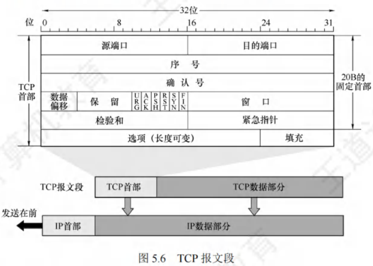
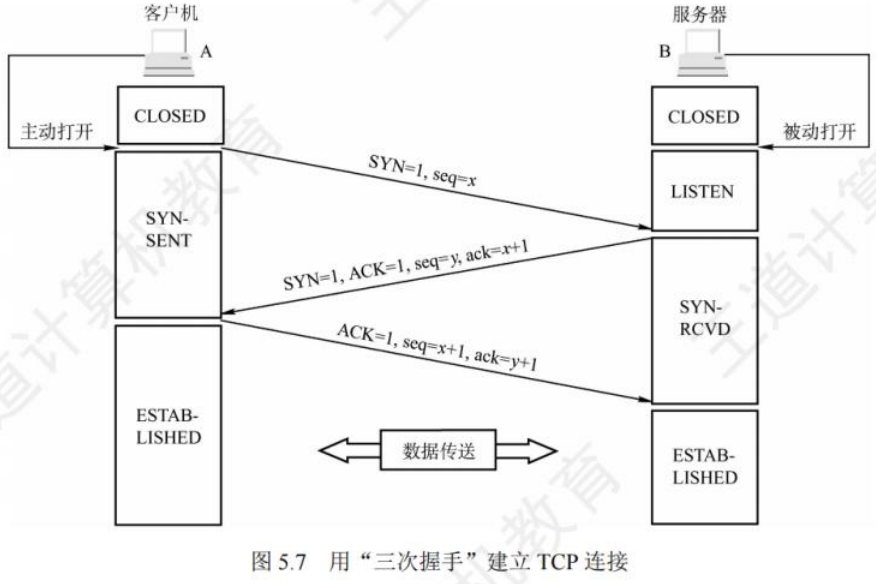
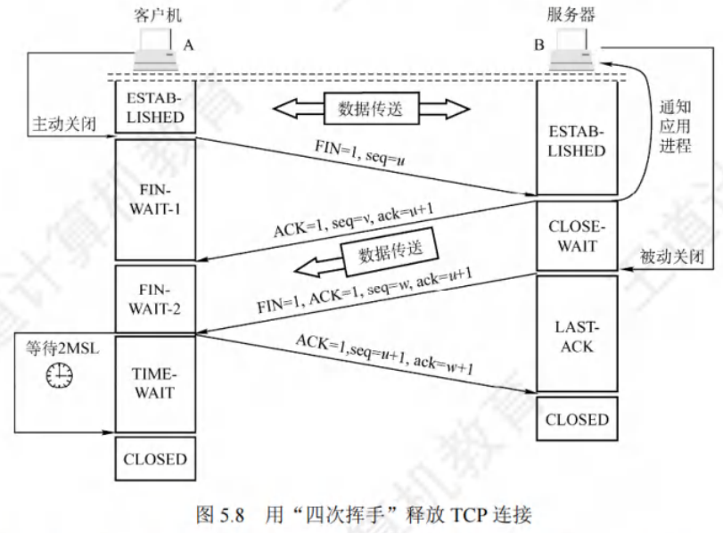
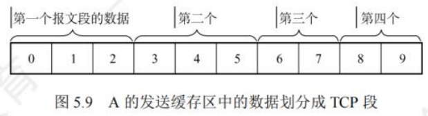
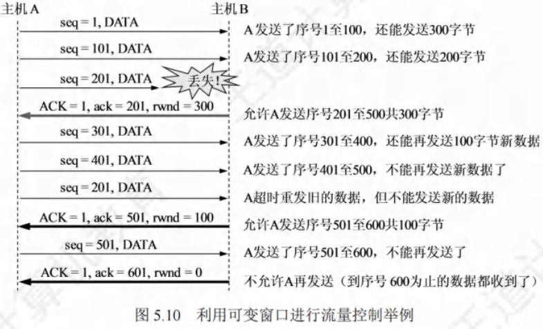
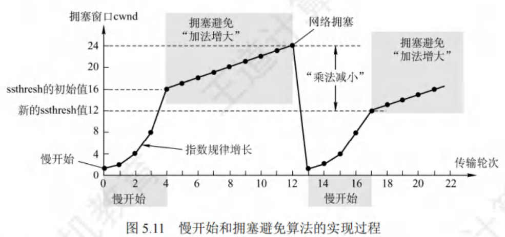
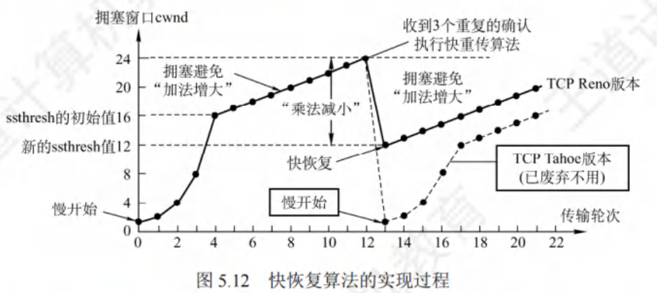

TCP
[toc]
TCP的特点
TCP是在不可靠的IP层之上实现可靠数据传输的协议，主要解决传输的可靠、有序、无丢失和不重复问题，是TCP/IP体系中较为复杂的协议，具有以下特点：
- 面向连接：TCP连接是一条逻辑连接。
- 一对一连接：每一条TCP连接仅有两个端点，只能是一对一的。
- 可靠交付：保证传送的数据无差错、不丢失、不重复且有序。
- 全双工通信：允许通信双方应用进程随时发送数据。为此，TCP连接两端都设有发送缓存和接收缓存，用于临时存放双向通信的数据。
- 发送缓存：暂存发送应用程序传送给发送方TCP准备发送的数据，以及TCP已发送但尚未收到确认的数据。
- 接收缓存：暂存按序到达但尚未被接收应用程序读取的数据，以及不按序到达的数据。
- 面向字节流：虽然应用程序与TCP交互是以数据块（大小不等)进行，但TCP将应用程序交下来的数据视为一连串无结构的字节流。
TCP和UDP发送报文方式不同，UDP报文长度由发送应用进程决定，而TCP报文长度依据接收方给出的窗口值和当前网络拥塞程度确定。若应用进程传送到TCP缓存的数据块太长，TCP会将其划分得短一些再传送；若太短，TCP会等到积累足够多字节后再构成报文段发送。
TCP报文段
TCP传送的数据单元为报文段，既用于运载数据，也用于建立连接、释放连接和应答。一个TCP报文段由首部和数据两部分组成，整个TCP报文段作为IP数据报的数据部分封装在IP数据报中。其首部前20B固定，后面有4N字节根据需要增加的选项，长度为4B的整数倍。

TCP报文段字段意义
-
源端口和目的端口：各占2B，分别表示发送方和接收方使用的端口号。
-
序号：占4B，范围 ，共个序号。TCP连接中传送字节流的每个字节都按顺序编号，序号字段值指本报文段所发送数据的第一个字节的序号。例如，报文段序号字段值是301，携带数据100B，则该报文段数据最后一个字节序号是400，下一个报文段数据序号从401开始。
-
确认号：占4B，是期望收到对方下一个报文段的第一个数据字节的序号。若确认号为N，则表明到序号N - 1为止的所有数据都已正确收到。例如，B正确收到A发送的序号字段为501，数据长度200B（序号501 - 700)的报文段，表明B正确收到A发送到序号700为止的数据，B期望收到A的下一个数据序号是701，B在发送给A的确认报文段中把确认号置为701。
-
数据偏移（首部长度)：占4位，不是IP数据报分片的那个数据偏移，而是表示首部长度（首部中含长度不确定的选项字段)，指出TCP报文段的数据起始处距离TCP报文段起始处有多远。“数据偏移”单位是32位（以4B为计算单位)，4位二进制数能表示的最大值为15，所以TCP首部最大长度为60B。
-
保留：占6位，保留为今后使用，目前应置为0。
-
紧急位URG：当URG = 1时，表明紧急指针字段有效，告知系统此报文段中有紧急数据，应尽快传送（相当于高优先级数据)。紧急数据插入到报文段数据最前面，需与首部中的紧急指针字段配合使用。
-
确认位ACK：仅当ACK = 1时确认号字段才有效，ACK = 0时，确认号无效。TCP规定，连接建立后所有传送的报文段都必须把ACK置1。
-
推送位PSH：两个应用进程交互式通信时，希望键入命令后立即收到对方响应，此时发送方TCP把PSH置1，接收方TCP收到PSH = 1的报文段后，尽快交付给接收应用进程，而不再等整个缓存填满后再向上交付。
-
复位位RST：当RST = 1时，表示TCP连接出现严重差错（如主机崩溃等)，必须释放连接，然后重新建立传输连接。也可用于拒绝一个非法的报文段。
-
同步位SYN：当SYN = 1时表示这是一个连接请求或连接接受报文。
- 当SYN = 1，ACK = 0时，表明是连接请求报文，
- 若对方同意建立连接，则应在响应报文中使用SYN = 1，ACK = 1。
-
终止位FIN：用于释放一个连接。当FIN = 1时，表明此报文段的发送方数据已发送完毕，并要求释放传输连接。
-
窗口：占2B，范围 。窗口值告知对方，从本报文段首部中的确认号算起，接收方目前允许对方发送的数据量（以字节为单位)。接收方数据缓存空间有限，窗口值作为接收方让发送方设置其发送窗口的依据。例如，确认号是701，窗口字段是1000，表明从701号算起，发送此报文段的一方还有接收1000字节数据（字节序号为701 - 1700)的接收缓存空间。
-
检验和：占2B，检验范围包括首部和数据两部分。计算检验和时，和UDP一样，要在TCP报文段前面加上12B的伪首部（只需将UDP伪首部的协议字段的17改成6，UDP长度字段改成TCP长度，其他与UDP相同)。
- 紧急指针：占2B，仅在URG = 1时有意义，指出本报文段中的紧急数据的字节数（紧急数据在报文段数据最前面)，即便窗口为零也可发送紧急数据。`
-
选项：长度可变，最长可达40B。不使用选项时，TCP首部长度是20B。TCP最初规定的一种选项是最大报文段长度（MSS)，MSS是TCP报文段中数据字段的最大长度（仅指数据字段)。
-
填充：使整个首部长度是4B的整数倍。
TCP连接管理
TCP是面向连接的协议，每个TCP连接有连接建立、数据传送和连接释放三个阶段 。TCP连接管理确保运输连接的建立和释放正常进行。
在TCP连接建立过程中，需解决以下三个问题：
- 让每一方能确知对方的存在。
- 允许双方协商一些参数（如最大窗口值、是否使用窗口扩大选项、时间戳选项等)。
- 能够对运输实体资源（如缓存大小、连接表中的项目等)进行分配。
TCP将连接作为基本抽象，每条TCP连接有两个端点，端点即套接字（Socket) 。每一条TCP连接唯一地由通信的两个端点（即两个套接字)确定。需注意，同一个IP地址可有多个不同的TCP连接，同一个端口号也可出现在多个不同的TCP连接中。
TCP连接的建立采用客户/服务器模式。主动发起连接建立的应用进程称为客户（Client)，被动等待连接建立的应用进程称为服务器（Server)。
TCP连接的建立(三次握手过程)

TCP连接的建立需经历三个步骤，通常称为“三次握手”，具体过程如下：
-
连接建立前的状态
- 服务器处于 LISTEN（收听) 状态，持续等待客户端的连接请求。
-
第一步：客户端发送连接请求
-
客户端的TCP向服务器的TCP发送连接请求报文段，报文段首部特性：
- 同步位 SYN = 1（表示这是一个连接请求)；
- 选择初始序号 seq = x（客户端自身的起始序号)。
-
注意：SYN报文段不能携带数据，但会消耗一个序号（即x会被占用)。
-
发送后，客户端进入 SYN-SENT（同步已发送) 状态。
-
-
第二步：服务器回应确认
-
服务器的TCP收到连接请求后，若同意建立连接，会向客户端发回确认报文段，报文段首部特性：
- 同步位 SYN = 1 且确认位 ACK = 1（表示同意连接并确认收到请求)；
- 确认号 ack = x + 1（对客户端初始序号x的确认，即期望下次收到x+1)；
- 服务器自身选择初始序号 seq = y。
-
注意：该确认报文段不能携带数据，且会消耗一个序号（即y会被占用)。
-
发送后，服务器进入 SYN-RCVD（同步收到) 状态。
-
-
第三步：客户端再次确认
-
客户端收到服务器的确认报文段后，向服务器发送最终确认报文段，报文段首部特性：
- 确认位 ACK = 1；
- 确认号 ack = y + 1（对服务器初始序号y的确认，即期望下次收到y+1)；
- 序号 seq = x + 1（客户端序号递增，延续第一步的x)。
-
注意：该报文段可以携带数据；若不携带数据，则不消耗序号。
-
发送后，客户端进入 ESTABLISHED（已建立连接) 状态。
-
-
连接建立完成
-
服务器收到客户端的最终确认后，也进入 ESTABLISHED（已建立连接) 状态。
-
至此，TCP连接成功建立，双方可开始传输应用层数据。
-
-
后续通信特性
- TCP提供全双工通信，连接建立后，通信双方的应用进程可在任何时候向对方发送数据。
TCP连接的释放(四次挥手)

TCP连接的释放可由参与连接的任意一方发起，通常称为“四次挥手”，具体步骤如下：
-
第一步：客户端发起连接释放请求
-
客户端打算关闭连接时，向其TCP发送连接释放报文段，并停止发送数据（主动关闭连接)。报文段特性：
- 终止位 FIN = 1（表示请求释放连接)；
- 序号 seq = u（u为客户端已传数据最后一字节序号+1)。
-
注意：FIN报文段即使不携带数据，也会消耗一个序号（u被占用)。
-
发送后，客户端进入 FIN-WAIT-1（终止等待1) 状态。
-
由于TCP是全双工通信，此操作仅关闭客户端到服务器的单向数据通路，服务器仍可向客户端发送数据。
-
-
第二步：服务器确认客户端的释放请求
-
服务器收到连接释放报文段后，立即发出确认报文段，特性：
- 确认位 ACK = 1；
- 确认号 ack = u + 1（对客户端序号u的确认)；
- 序号 seq = v（v为服务器已传数据最后一字节序号+1)。
-
发送后，服务器进入 CLOSE-WAIT（关闭等待) 状态。
-
此时，客户端到服务器的连接已释放（半关闭状态)，但服务器仍可向客户端发送数据。
-
客户端收到确认后，进入 FIN-WAIT-2（终止等待2) 状态，等待服务器的连接释放请求。
-
-
第三步：服务器发起连接释放请求
-
若服务器无更多数据发送，向客户端发送连接释放报文段，特性：
- 终止位 FIN = 1 且确认位 ACK = 1；
- 序号 seq = w（w可能包含半关闭状态下服务器新增发送的数据的最后序号+1)；
- 重复确认号 ack = u + 1（与第二步一致)。
-
发送后，服务器进入 LAST-ACK（最后确认) 状态，等待客户端的最终确认。
-
-
第四步：客户端确认服务器的释放请求
-
客户端收到服务器的释放报文段后，发出最终确认报文段，特性：
- 确认位 ACK = 1；
- 确认号 ack = w + 1（对服务器序号w的确认)；
- 序号 seq = u + 1（延续客户端的序号)。
-
发送后，客户端进入 TIME-WAIT（时间等待) 状态，需等待 2MSL（最长报文段寿命) 后才进入 CLOSED（连接关闭) 状态。
-
服务器收到最终确认后，立即进入 CLOSED 状态。
-
-
释放时间说明
-
若服务器无额外数据发送，客户端释放连接的最短时间为 1RTT + 2MSL（从发出FIN开始计算)；
-
服务器释放连接的最短时间为 1.5RTT。
-
-
相关计时器
-
时间等待计时器：用于客户端在TIME-WAIT状态等待2MSL，确保服务器能收到最终确认，避免残留报文干扰新连接。
-
保活计时器：若客户端意外故障，服务器可通过该计时器检测连接失效，避免长期空等。
-
TCP连接建立与释放的核心总结
| 过程 | 步骤 | 报文段关键标识 |
|---|---|---|
| 建立连接（三次握手) | 1 | SYN = 1, seq = x |
| 2 | SYN = 1, ACK = 1, seq = y, ack = x + 1 | |
| 3 | ACK = 1, seq = x + 1, ack = y + 1 | |
| 释放连接（四次挥手) | 1 | FIN = 1, seq = u |
| 2 | ACK = 1, seq = v, ack = u + 1 | |
| 3 | FIN = 1, ACK = 1, seq = w, ack = u + 1 | |
| 4 | ACK = 1, seq = u + 1, ack = w + 1 |
TCP可靠传输
TCP在不可靠的IP层之上构建可靠数据传输服务，确保接收方从缓存区读出的字节流与发送方发出的字节流完全一致。TCP借助检验、序号、确认和重传等机制达成可靠数据传输服务，其中检验机制与UDP相同。
- 序号
TCP首部的序号字段用于保障数据能有序提交给应用层。TCP将数据视作无结构但有序的字节流，序号基于传送的字节流设定，而非报文段。
TCP连接传送的数据流中每个字节都有编号，序号字段值指本报文段所发送数据的第一个字节序号。例如，假设A和B建立TCP连接，A的发送缓冲区有10B，从0开始编号，第一个报文段含第0 - 2个字节，该TCP报文段序号就是0，第二个报文段序号为3。

- 确认
TCP首部的确认号是期望收到对方下一个报文段数据的第一个字节序号。如在上述例子中，若接收方B已收到第一个报文段数据，此时B期望收到的下一个报文段数据从第3个字节开始，那么B发送给A的报文段中确认号字段应为3。发送方缓存区会留存已发送但未确认的报文段，以备重传。
TCP默认采用累积确认，即TCP只确认数据流中至第一个丢失字节为止的字节。例如，接收方B收到A发送的包含字节0 - 2及字节6 - 7的报文段，因某些原因未收到字节3 - 5的报文段，此时B仍在等待字节3及其后续字节，所以B发给A的下一个报文段会将确认号字段置为3。
- 重传
导致TCP重传报文段的事件有两种：超时和冗余ACK。
-
超时
-
TCP每发送一个报文段，就为其设置一个超时计时器。若计时器设定的重传时间到期仍未收到确认，就重传该报文段。
-
由于TCP下层是复杂的互联网环境，IP数据报路由变化大，传输层往返时延方差也大。为计算超时计时器的重传时间，TCP采用自适应算法，记录报文段发出时间与收到相应确认的时间，二者之差即报文段的往返时间（RTT)。TCP维护RTT的加权平均往返时间RTTS，其会随新测量RTT样本值变化。
-
超时计时器设置的超时重传时间（RTO)应略大于RTTS，但不能过大，否则报文段丢失时，TCP不能快速重传，导致数据传输时延增大。
-
-
冗余ACK（冗余确认)
-
超时触发重传存在超时周期过长的问题。不过，发送方通常能在超时事件发生前，通过冗余ACK较好地检测丢包情况。
-
冗余ACK是对某个报文段再次确认的ACK，而发送方此前已收到过该报文段的确认。例如，发送方A发送序号为1、2、3、4、5的TCP报文段，2号报文段在链路中丢失，未到达接收方B，3、4、5号报文段对B来说就是失序报文段。
-
TCP规定，每当比期望序号大的失序报文段到达，就发送一个冗余ACK，指明下一个期待字节的序号。
-
在此例中，3、4、5号报文段到达B，但非B期望的下一个报文段，于是B发送3个对1号报文段的冗余ACK，表示期望接收2号报文段。
-
TCP规定，当发送方收到对同一个报文段的3个冗余ACK时，就认为跟在这个被确认报文段之后的报文段已丢失。
-
在此例中，当A收到对1号报文段的3个冗余ACK时，可认为2号报文段已丢失，此时发送方A立即重传2号报文段，这种技术称为快速重传。
-
TCP流量控制
流量控制旨在使发送方发送速率与接收方接收速率匹配，确保接收方来得及接收，可视为一种速度匹配服务。
TCP利用滑动窗口机制实现流量控制。
-
TCP要求发送方维持一个接收窗口（
rwnd)，接收方依据当前接收缓存大小动态调整接收窗口大小，该大小反映接收方容量，并将其置于TCP报文段首部的“窗口”字段通知发送方。发送方的发送窗口不能超过接收方给出的接收窗口值，以此限制发送方向网络注入报文的速率。 -
假设数据仅从A发往B，B仅向A发送确认报文段，B可通过设置确认报文段首部的窗口字段将
rwnd通知给A。rwnd即接收方允许连续接收的能力，单位为字节。发送方A始终依据最新收到的rwnd值限制自身发送窗口大小，将未确认的数据量控制在rwnd范围内，防止A使B的接收缓存溢出。 -
TCP为每个连接设置一个持续计时器，一旦发送方收到对方的零窗口通知，就启动该计时器。若计时器超时，发送一个零窗口探测报文段，对方在确认此探测报文段时给出当前窗口值。若窗口仍为零，发送方收到确认报文段后重新设置持续计时器。
传输层和数据链路层流量控制的区别在于：
- 传输层实现端到端（两个进程之间)的流量控制；
- 数据链路层实现两个相邻中间结点之间的流量控制。数据链路层滑动窗口协议的窗口大小不能动态变化，而传输层的窗口大小可动态变化。

TCP拥塞控制
拥塞控制旨在防止过多数据注入网络，确保网络中的路由器或链路不会过载。出现拥塞时，端点感受到的往往是通信时延增加。
-
拥塞控制与流量控制的区别：
-
拥塞控制是全局性过程，涉及所有主机、路由器及影响网络传输性能的因素，目的是让网络承受现有负荷；
-
流量控制是端到端问题，由接收端控制发送端，抑制发送端速率使接收端能及时接收。二者相似之处在于都通过控制发送方速率达到控制效果。
-
例如，大型机向PC高速传送文件，可能需流量控制；众多PC同时在链路传输文件，可能面临拥塞控制问题。
-
TCP拥塞控制算法
慢开始、拥塞避免、快重传和快恢复。
- 发送方确定发送速率时，需兼顾接收方能力与网络拥塞情况。
- 除接收窗口，TCP要求发送方维持一个拥塞窗口（
cwnd)，其大小依网络拥塞程度动态变化。 - 发送方控制拥塞窗口原则为：网络未拥塞时增大
cwnd以提高利用率；网络拥塞时减小cwnd以缓解拥塞。 - 发送窗口上限值取接收窗口
rwnd和拥塞窗口cwnd中的较小值，即发送窗口的上限值 = min[rwnd,cwnd]。 - 接收窗口大小由TCP报文首部窗口字段通知发送方，而拥塞窗口的维护由慢开始和拥塞避免算法实现。
- 假设数据单向传送，对方只传确认报文，且接收方缓存足够大，发送窗口大小由网络拥塞程度决定，以下采用最大报文段长度MSS作为拥塞窗口大小单位。
- 除接收窗口，TCP要求发送方维持一个拥塞窗口（
慢开始和拥塞避免
-
慢开始算法
-
发送方初发数据时，因不清楚网络负荷，先少量发送探测。
-
若未拥塞，适当增大拥塞窗口（即发送窗口)，从较小值逐渐增大。例如，A向B发送数据，初始令
cwnd= 1（1个MSS)，A发送第一个报文段，收到B确认后，cwnd增至2，接着发送两个报文段，收到确认后，cwnd增至4，以此类推。 -
慢开始的“慢”并非指
cwnd增长速率慢，而是初始设置cwnd= 1，减少初始注入网络的报文段，试探网络拥塞情况，之后逐渐增大cwnd，预防网络拥塞。 -
使用慢开始算法，每经过一个传输轮次（往返时延RTT)，
cwnd加倍，即指数增长。为防cwnd过大引发拥塞，设置慢开始门限ssthresh。 -
当
cwnd增大到ssthresh时，改用拥塞避免算法。
-
-
拥塞避免算法
- 让拥塞窗口
cwnd缓慢增大，每经过一个往返时延RTT，cwnd加1，而非加倍，按线性规律增长，比慢开始算法增长速率慢。
- 让拥塞窗口
-
网络拥塞的处理
-
无论慢开始还是拥塞避免阶段，若发送方判断网络拥塞（未按时收到确认)，先将慢开始门限
ssthresh设为拥塞时cwnd值的一半（不小于2)，再将cwnd重新设为1，执行慢开始算法。 -
目的是快速减少主机发送到网络的分组数，使拥塞路由器有时间处理积压分组。
-
慢开始和拥塞避免算法使用“乘法减小”和“加法增大”方法。
- “乘法减小”指出现超时（可能拥塞)时，将
ssthresh设为当前cwnd一半（执行慢开始算法)，网络频繁拥塞时，ssthresh快速下降，减少注入网络分组数； - “加法增大”指执行拥塞避免算法后，经过一个RTT收到所有报文段确认，
cwnd增加一个MSS大小，使cwnd缓慢增大，防止网络过早拥塞。 - 拥塞避免不能完全避免拥塞，只是在拥塞避免阶段让
cwnd按线性规律增长，降低拥塞可能性。
- “乘法减小”指出现超时（可能拥塞)时，将
-

快重传和快恢复
-
快重传
-
个别报文段丢失但网络未拥塞时，若发送方因未及时收到确认而超时，会误判网络拥塞启动慢开始算法，降低传输效率。
-
快重传算法让发送方尽快重传，不等超时计时器超时。
-
接收方不等自己发送数据时捎带确认，而是立即发送确认，收到失序报文段也立即发出对已收到报文段的重复确认。
-
发送方连续收到3个冗余ACK（重复确认)时，立即重传相应报文段。
-
-
快恢复
-
发送方连续收到3个冗余ACK时，执行“乘法减小”，将慢开始门限
ssthresh调整为当前cwnd的一半，预防网络拥塞。 -
但此时发送方认为网络可能未严重拥塞，所以与慢开始算法不同，将
cwnd值也调整为当前cwnd的一半（等于ssthresh值)，然后执行拥塞避免算法（“加法增大”)，使拥塞窗口缓慢线性增大，跳过cwnd从1起始的慢开始过程，因此称为快恢复。
-
四种算法同时应用于拥塞控制机制
- TCP连接建立和网络超时时，采用慢开始和拥塞避免算法（
ssthresh=cwnd/ 2,cwnd= 1)； - 发送方收到3个冗余ACK时，采用快重传和快恢复算法（
ssthresh=cwnd/ 2,cwnd=ssthresh)。 - 流量控制中，发送方发送量由接收方决定；
- 拥塞控制中，由发送方检测网络状况决定。
- 发送方发送窗口大小由流量控制和拥塞控制共同决定，当同时出现接收窗口（
rwnd)和拥塞窗口（cwnd)时，发送方发送窗口实际大小取rwnd和cwnd中较小值。
